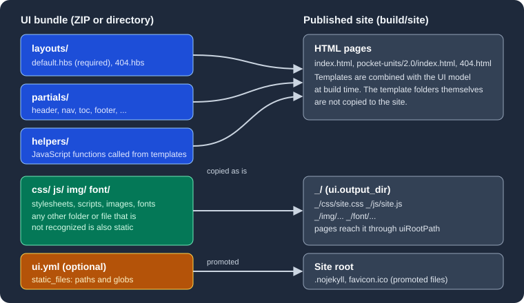

UI Bundle
|
This content was generated with the assistance of AI and should be verified against the official documentation before being relied on in production. |
This page was written against Antora 3.2.1 and the Antora Default UI at commit 0e38223a of its default branch, and checked on 2026-10-26. Antora produces the content of a documentation site (the HTML of every page body, the navigation tree, the breadcrumbs), but it does not decide what the site looks like. Colours, fonts, the header, the sidebar and the page template come from a separate artifact, the UI bundle, which the playbook points to. This page explains what that artifact is and how Antora consumes it. The pages that follow cover building one, writing templates and helpers, styling, supplementing and publishing.
What a UI bundle is
A UI bundle is a ZIP archive (or, for local use, a directory with the same layout as the extracted archive) that holds everything needed to turn Antora’s page model into a themed site. The Antora documentation describes it as an archive "that contains one or more UIs for a site". It has two kinds of content:
-
Template and configuration files that Antora reads while it generates the HTML. They are never copied to the site.
-
Static files (stylesheets, scripts, images, fonts and anything else) that Antora copies to the published site as they are.
The table lists the top-level entries of the bundle.
| Entry | Purpose | Ends up in the site? |
|---|---|---|
|
Page layouts written in Handlebars ( |
No. Used to compose every HTML page. |
|
Reusable Handlebars fragments ( |
No. Used to compose every HTML page. |
|
JavaScript functions, one per file, that templates call as Handlebars helpers (for example |
No. Executed during the build. |
|
Optional UI descriptor. Its |
No. Read as configuration. |
|
The stylesheet, the browser scripts, the images and the web fonts used by the layouts. |
Yes, under the UI output directory ( |
Any other file or folder |
Classified as static by Antora, for example a |
Yes, under the UI output directory, unless |
The official Default UI documentation states this classification rule: the folders helpers, layouts and partials and the
optional ui.yml are the files Antora recognizes as non-publishable, and every other file or folder is static. Files and
folders whose names begin with a dot are ignored unless ui.yml lists them explicitly.

The figure shows the flow: the three template folders and the UI model produce the HTML pages, the four asset folders are copied
under _, and the files listed in ui.yml are promoted to the site root.
The only required files
The only required file in a bundle is the default page layout, layouts/default.hbs. The documentation adds that, when the 404 page is
enabled, layouts/404.hbs is required as well. Both statements were tried against a copy of the Default UI bundle with a
Pocket Units site whose playbook sets site.url. Removing layouts/default.hbs stopped the build with this fatal error:
{"level":"fatal","name":"antora","hint":"Add the --stacktrace option to see the cause of the error.","msg":"default layout not found"}Removing layouts/404.hbs instead stopped the build with the message 404 layout not found. Everything else in a bundle is
optional: a bundle with only layouts/default.hbs and layouts/404.hbs is a valid, if unstyled, UI.
Source: Antora docs: Specify a UI bundle
How Antora uses the bundle
During a run Antora loads the bundle after reading the playbook. It extracts the files into a virtual catalog, overlays the supplemental UI on top (see Supplemental UI), copies the static files into the output, and then, for every page, builds a UI model and renders the chosen layout with it (see Templates and UI Model). The page content and the navigation come from the content sources, so the same bundle can be reused across any number of sites.
The ui key of the playbook controls all of this. The full playbook schema is described in
Playbook; the keys that matter for the bundle are these:
| Key | Meaning | Default |
|---|---|---|
|
Required. A URL or a filesystem path of the bundle. A remote value must be a ZIP archive. A local value may be a ZIP archive or a directory. |
None. A playbook without it fails validation. |
|
Marks a remote bundle as a snapshot: Antora downloads it again whenever fetching is enabled, even though the URL did not change. |
|
|
A path inside the bundle where Antora starts reading files. Useful when one archive packages several UIs. |
The root of the bundle |
|
Where the UI files are published, relative to the root of the published site. |
|
|
The stem (file name without extension) of the layout Antora applies to pages that do not set the |
|
|
A directory or a list of virtual files laid over the bundle. |
None |
Source: Antora docs: Specify a UI bundle
Loading a bundle by URL
The smallest working ui configuration is the bundle.url key. This is the form the Antora documentation uses for its own
reference bundle, with snapshot: true because that URL never changes while the file behind it does:
site:
title: Pocket Units Docs
url: https://docs.example.org
start_page: pocket-units::index.adoc
content:
sources:
- url: https://github.com/example/pocket-units.git
branches: [v1.0, v2.0]
ui:
bundle:
url: https://gitlab.com/antora/antora-ui-default/-/jobs/artifacts/HEAD/raw/build/ui-bundle.zip?job=bundle-stable
snapshot: trueSource: Antora docs: Specify a UI bundle
This example was not executed here because it downloads the bundle from the network and clones a repository that does not exist. The same playbook with a local bundle path instead of the URL is used in the runs shown below.
Loading a local bundle
When url is a filesystem path, Antora reads that file or directory directly. A path may point to a ZIP archive, to a directory
where the archive was extracted, or to the directory the Default UI build writes before it zips it. A relative path follows the usual
playbook rule: a leading ~ is the home directory, a leading . is relative to the location of the playbook file, and anything
else (including a leading ~+) is relative to the current working directory.
ui:
bundle:
url: ./../docs-ui/build/ui-bundle.zipSource: Antora docs: Specify a UI bundle
A missing path is reported before anything else happens. Running a playbook whose ui.bundle.url was ./nope.zip printed:
{"level":"fatal","name":"antora","hint":"Add the --stacktrace option to see the cause of the error.","msg":"Specified UI bundle does not exist: <path to the playbook directory>/nope.zip (resolved from url: ./nope.zip)"}A playbook with no ui.bundle.url at all is rejected by the schema with ui.bundle.url: must be of type String.
Loading the bundle from a directory is a good way to debug templates, because the directory can be rebuilt without zipping it each time. That workflow is covered in Building a Custom UI.
Caching: by URL, not by content
Antora caches a remote bundle the first time it downloads it. The cache key is the signature of the URL. On later runs Antora loads
the cached copy as long as the url value is unchanged, so a site can be generated offline. The cache lives in Antora’s cache
directory, which defaults to $HOME/Library/Caches/antora on macOS, $XDG_CACHE_HOME/antora or $HOME/.cache/antora on Linux
and $APPDATA/antora/Caches on Windows. On the machine used for this page it contained a ui folder with one ZIP file named
after a hash of the URL, next to the content and collector folders. The location can be changed with runtime.cache_dir.
The rule that follows is the one that surprises people most. Antora does not look at the bytes of the archive. If the URL stays the same
and the archive behind it changes, Antora keeps using the old cached copy, even when --fetch is passed, unless the bundle is
marked as a snapshot. That is what snapshot is for:
-
snapshot: false(default): the bundle is downloaded once per distinct URL. To get a new version, change the URL (for example a versioned file name such asui-bundle-1.4.0.zip), delete the cache, or switch to another cache directory. -
snapshot: true: the bundle is downloaded again every time fetching is enabled, with--fetchon the command line orruntime.fetch: truein the playbook. Without fetching, even a snapshot comes from the cache.
runtime:
fetch: trueSource: Antora docs: Specify a UI bundle
The documentation states that snapshot is only needed for a remote bundle, because a bundle read from the filesystem is always
read again from the file named. The playbook of this documentation site sets snapshot: true on a relative local path
(ui-bundle.zip), which therefore does no harm but, according to the documentation, has no effect either. See
this site as a case study.
Selecting a UI with start_path
start_path makes Antora ignore every file outside one folder of the archive. It is intended for a single archive that packages
several UIs (a light theme and a dark theme, for instance). Only the files below the selected folder form the UI, so the layouts,
partials, helpers and static files all have to be inside it.
Choosing where the UI files go with output_dir
The UI’s static files are published into a folder named _, relative to the root of the site. output_dir replaces that folder.
Antora recomputes every reference to the UI files through the uiRootPath placeholder that the templates use, so no template needs
to change when the folder moves.
ui:
bundle:
url: ./themes.zip
start_path: dark
output_dir: _/darkSource: Antora docs: UI Output Directory
Choosing a layout with default_layout
Every page is rendered with a layout. The page attribute page-layout selects one by name. A page that does not set it gets the
default layout, which is layouts/default.hbs unless ui.default_layout names another stem. For example default_layout: article
makes layouts/article.hbs the layout of every page that does not set page-layout.
ui:
bundle:
url: ./../docs-ui/build/ui-bundle.zip
default_layout: articleThe layout file must exist in the bundle. Pointing default_layout at a layout that is not there stops the build, as this run
(with default_layout: article and the Default UI, which has no article.hbs) showed:
{"level":"fatal","name":"antora","hint":"Add the --stacktrace option to see the cause of the error.","msg":"article layout not found"}A worked run: a bundle with two themes
The following run uses the Pocket Units sources. The Default UI was built with npx gulp bundle, the extracted result was placed
in a dark/ folder, and the folder was zipped into themes.zip. The command unzip -l themes.zip starts with the dark/ folder,
which is why start_path: dark selects it. The playbook is the one from the output_dir example above, plus the content source:
site:
title: Pocket Units Docs
url: http://localhost:5252
start_page: pocket-units::index.adoc
content:
sources:
- url: ../antora/src/pocket-units
branches: [v1.0, v2.0]
- url: ../antora/src/shared
branches: main
ui:
bundle:
url: ./themes.zip
start_path: dark
output_dir: _/dark
output:
dir: build/siteSource: Antora docs: Specify a UI bundle
npx antora antora-playbook.yml
ls build/site build/site/_ build/site/_/dark
grep -o '<link rel="stylesheet"[^>]*>' build/site/pocket-units/2.0/index.htmlThe build finished without errors. The listing shows that the UI files landed under _/dark, and that the page found them through
a relative uiRootPath:
build/site:
404.html
_
index.html
pocket-units
shared
sitemap-pocket-units.xml
sitemap-shared.xml
sitemap.xml
build/site/_:
dark
build/site/_/dark:
css
font
img
js
<link rel="stylesheet" href="../../_/dark/css/site.css">Neither layouts/, partials/ nor helpers/ appears in the site. A second run used a directory instead of a ZIP and added a
ui.yml with static_files: [.nojekyll] plus an empty .nojekyll file in the bundle. The site root then contained .nojekyll,
404.html, _, index.html, pocket-units and sitemap.xml, and _ contained only css, font, img and js. That is the
promotion rule at work: the hidden file was moved out of the UI folder to the site root.
The ui.yml descriptor
ui.yml is the UI descriptor and must sit at the root of the bundle (of the folder selected by start_path). Its one documented
key is static_files, an array whose entries are exact relative paths or globs of paths in the bundle. Each entry must match files,
not folders. Matched files are copied to the site root instead of the UI output directory. Wildcards never match hidden files, so a
dot file such as .nojekyll must be listed by its exact path.
static_files:
- favicon.ico
- .nojekyllIn a UI project the file is kept as src/ui.yml, and the build copies it to the root of the bundle. The Default UI does not ship
one. Its output has none, and in the bundle built for this page a ui.yml was not present. This documentation site’s playbook
supplies the descriptor through ui.supplemental_files instead; that technique, including the rule that a supplemental ui.yml
replaces the one in the bundle, is described in Supplemental UI. Static
files and promotion in detail are covered in
Stylesheets, Fonts and Static Files.
The Antora Default UI
Antora provides a reference bundle, the Default UI, from the repository https://gitlab.com/antora/antora-ui-default. It is the
UI that most Antora sites start from, it is licensed under MPL-2.0, and its documentation says it contains the UI assets (page
templates, CSS, JavaScript, images and so on) plus a Gulp build script that can preview the UI locally with live updates or package
it for Antora. At the time of this check the repository had no release tags. The default branch is named master, and the
bundle is distributed as the artifact of a GitLab CI job (bundle-stable), which publishes build/ui-bundle.zip. That is why the
playbook example above uses a jobs/artifacts/HEAD/raw/... URL with snapshot: true: the file behind the URL changes with every
build of the default branch.
Two terms from its documentation are worth separating:
-
The UI project is the Git repository: sources, the Gulp build,
package.jsonand everything needed to produce the bundle. It is the development workspace. -
The UI bundle is the distributable archive produced from it: compiled and consolidated files ready for Antora.
Building the Default UI in a scratch clone (npm ci followed by npx gulp bundle) produced a build/ui-bundle.zip of about 307 kB
with 74 entries. The source folders of the project map to bundle folders like this:
| UI project | Bundle | Notes |
|---|---|---|
|
|
The only layouts in the Default UI. |
|
|
|
|
|
|
|
|
Many source stylesheets are concatenated into one file by the build. |
|
|
|
|
|
Icons used by the layouts. |
Fonts from npm packages |
|
Generated during the build; 17 font files in this build. |
Source: Antora Default UI documentation
The Default UI is a starting point rather than a finished brand. Teams typically either use it as is with a few supplemental files, or fork the project into their own UI repository and publish their own bundle, which is the subject of the next pages:
-
Building a Custom UI: cloning the project and the Gulp tasks.
-
Templates and UI Model: layouts, partials and the variables templates can read.
-
Helpers: built-in helpers and writing your own.
-
Supplemental UI: tweaking a bundle from the playbook.
Pitfalls and version notes
-
Changing a remote bundle without changing its URL does nothing unless
snapshot: trueis set and fetching is enabled (--fetchorruntime.fetch). Versioned URLs avoid the problem, at the price of editing the playbook for each release. -
A remote
urlmust point to a ZIP. A directory is accepted only as a local path. -
start_pathmust name the folder that containslayouts/,partials/and so on. Files outside it are ignored. -
A missing layout is fatal. The messages seen while preparing this page were
default layout not found,404 layout not foundandarticle layout not found(an unknowndefault_layout). -
output_diris relative to the site root, andoutput.diris the site folder itself. UI files foroutput_dir: _/darkandoutput.dir: ./publicend up inpublic/_/dark. -
Antora 3.2 added
page.fileto the UI model, aresolveResourcehelper and an argument-less form of theresolvePageandresolvePageURLhelpers. A bundle that uses them needs Antora 3.2 or newer. -
The Antora project documents the Default UI as the reference bundle. Whether a custom bundle is published as a CI artifact, a release asset or a committed file is a choice of the project, discussed in Publishing a UI Bundle.